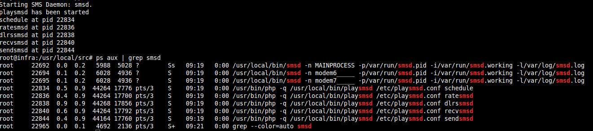
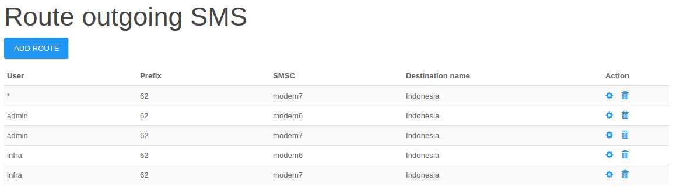
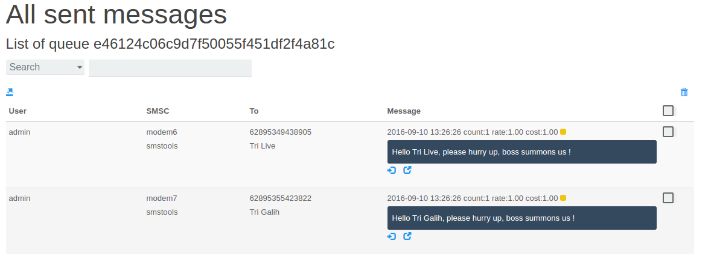
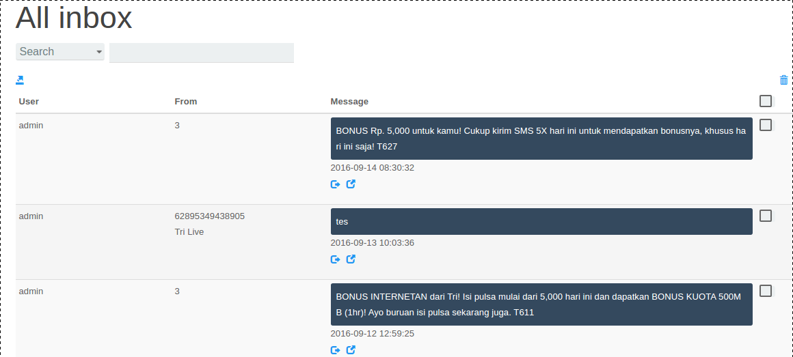

How to configure multiple modem PlaySMS Gammu
Setelah kita bisa membangun SMS Gateway dengan 1 modem beserta Webui PlaySMS, selanjutnya kita bisa menggunakan PlaySMS tersebut dengan multiple Modem.
Kali ini kita dengan modem 8 pool, namun pada saat test hanya digunakan 2 buah modem karena keterbatasan SIM Card.
Requirement:
- SMS3 Tools
- Shell script
SMS Tools 3
SMS Tools 3 digunakan sebagai daemon yang akan menghandle 8 pool daripada modem.
Install SMS Tools 3:
cd /usr/local/src
wget -c http://smstools3.kekekasvi.com/packages/smstools3-3.1.16beta.tar.gz
tar -xvf smstools3-3.1.16beta.tar.gz
cd smstools3/
./install.sh
make
make install
create directory:
mkdir -p /var/spool/sms/{modem6,modem7}
lalu create file /etc/smsd.conf seperti berikut:
lalu ubah rc.script /etc/init.d/sms3 menjadi seperti berikut:
lalu start sms3 dan cek daemonnya apakah sudah running atau belum:
oot@infra:/usr/local/src# /etc/init.d/sms3 start
Starting SMS Daemon: smsd.
playsmsd has been started
schedule at pid 22834
ratesmsd at pid 22836
dlrssmsd at pid 22838
recvsmsd at pid 22840
sendsmsd at pid 22844
root@infra:/usr/local/src# ps aux | grep smsd
root 22692 0.0 0.2 5988 5028 ? Ss 09:19 0:00 /usr/local/bin/smsd -n MAINPROCESS -p/var/run/smsd.pid -i/var/run/smsd.working -l/var/log/smsd.log
root 22694 0.1 0.2 6028 4936 ? S 09:19 0:00 /usr/local/bin/smsd -n modem6_____ -p/var/run/smsd.pid -i/var/run/smsd.working -l/var/log/smsd.log
root 22695 0.1 0.2 6028 4936 ? S 09:19 0:00 /usr/local/bin/smsd -n modem7_____ -p/var/run/smsd.pid -i/var/run/smsd.working -l/var/log/smsd.log
root 22834 0.5 0.9 44264 17776 pts/3 S 09:19 0:00 /usr/bin/php -q /usr/local/bin/playsmsd /etc/playsmsd.conf schedule
root 22836 0.4 0.9 44264 17700 pts/3 S 09:19 0:00 /usr/bin/php -q /usr/local/bin/playsmsd /etc/playsmsd.conf ratesmsd
root 22838 0.9 0.9 44268 17856 pts/3 S 09:19 0:00 /usr/bin/php -q /usr/local/bin/playsmsd /etc/playsmsd.conf dlrssmsd
root 22840 0.6 0.9 44264 17792 pts/3 S 09:19 0:00 /usr/bin/php -q /usr/local/bin/playsmsd /etc/playsmsd.conf recvsmsd
root 22844 0.4 0.9 44164 17760 pts/3 S 09:19 0:00 /usr/bin/php -q /usr/local/bin/playsmsd /etc/playsmsd.conf sendsmsd
root 22965 0.0 0.1 4692 2136 pts/3 S+ 09:21 0:00 grep --color=auto smsd

Terlihat daemon sudah running dengan baik, modem6 & modem7.
Shell Script
these are ways to works with outgoing sms (sent reports) and incoming sms (inbox reports) with multiple modem on PlaySMS
create file seperti berikut:
save as /root/bin/convert2gammu.sh
lalu create file /root/bin/runc2g.sh
beri semua file tersebut bit x permission lalu tambahkan di /etc/rc.local:
/root/bin/runc2g.sh
Setting PlaySMS agar bisa menggunakan SMS3 daemon
Klik Setting -> Route outgoing SMS

Konfigurasi seperti diatas.
Lalu Setting Gateway dan SMSC, Klik Setting -> Manage Gateway & SMSC

lalu test kirim sms untuk outgoing dan incoming.
Results

Sent Messages.

Inbox Messages